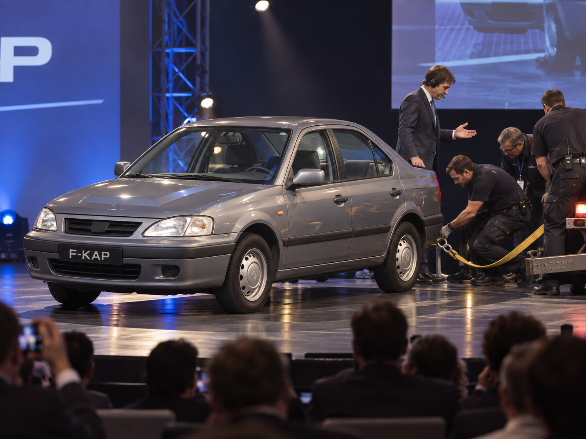

F-KAP E-UP
F-KAP E-UP — электромобиль компании F-KAP, выпускающийся с 2020 года. Модель была создана после неудачного проекта F-KAP Alektro 2016—2018 годов и первоначально разрабатывалась как электромобиль для эксплуатации в холодном климате. С 2022 года одной из основных особенностей E-UP является встроенная разговорная система Ara, связанная с системами автомобиля и рассчитанная на постоянное взаимодействие с водителем и пассажирами.
Предыстория
Работа над собственным электромобилем началась в F-KAP в 2016 году. Во время первых обсуждений главным сомнением стала эксплуатация электрической машины зимой: низкая температура увеличивала нагрузку на батарею и отопление салона и могла ухудшать практическую пригодность автомобиля. В результате проект решили строить именно вокруг этой проблемы и создавать электромобиль, рассчитанный прежде всего на холодный климат.
Проект получил рабочее название F-KAP Alektro. К 2018 году был подготовлен ходовой прототип, который руководство решило показать публике ещё до окончательной доводки. Для F-KAP это было необычно: компания традиционно продвигала новые машины обычной рекламой и редко устраивала крупные сценические презентации отдельных моделей.
Разработка

Прототип 2018 года
Первая публичная демонстрация Alektro состоялась в 2018 году. На сцену выехал серый четырёхдверный автомобиль с заметно более консервативным оформлением, чем ожидалось от новой электрической модели. Во время показа машина остановилась и перестала реагировать на действия водителя: силовой блок перешёл в защитный режим, после чего тяговая батарея отключилась. Повторно запустить автомобиль на сцене не удалось, и прототип пришлось убрать за сцену на буксире.
После провала презентации руководитель компании подала в отставку, а пост президента F-KAP занял её брат. Внутри предприятия было принято решение не продолжать доводку показанного автомобиля в прежнем виде. Сохранив необходимую техническую основу, проект отправили на полную переработку, а от названия Alektro отказались.
Переработка проекта
На переработку отвели около двух лет. Машина получила новый внешний облик и была заново подготовлена к серийному выпуску. При этом исходная идея не изменилась: будущий автомобиль по-прежнему должен был оставаться электрической моделью, ориентированной на нормальную эксплуатацию зимой, а не только на использование в мягком климате.
В 2020 году F-KAP снова вывел машину на сцену. Новый руководитель компании сразу объявил, что перед публикой находится переработанный проект 2018 года, теперь получивший название F-KAP E-UP. Вторая презентация прошла без остановки: автомобиль самостоятельно выехал на площадку, выполнил демонстрационный проезд и покинул сцену.
Конструкция и эксплуатация
E-UP проектировался как полностью электрический автомобиль. Подробные значения мощности тяговой установки, ёмкости батареи и официального запаса хода в истории модели отдельно не закреплялись. Основное внимание при разработке уделялось сохранению работоспособности в холодную погоду, отоплению салона и экономии энергии в условиях низкой температуры.
В автомобиле применяются круговые камеры и электронные системы контроля окружающей обстановки. Для движения при плохой видимости используется активное сканирование дальномером, уменьшающее зависимость от одних только камер. На машине также применяются солнечные панели, которые могут использоваться как дополнительный источник энергии. При критически низком заряде Ara способна отключать второстепенные потребители и собственную вычислительную систему, оставляя энергию для дальнейшего движения.
E-UP не проектировался как внедорожник. Подвеска рассчитана прежде всего на обычные дороги, и сама Ara при обсуждении эксплуатации в пустыне указывала, что автомобиль не предназначен для движения по глубокому песку.
Производство и рынки
Серийные продажи E-UP начались в 2020 году. На первом этапе модель лучше всего воспринималась на рынках, где зимняя специализация имела практическое значение или где марка F-KAP уже была хорошо известна. В России автомобиль получил заметный спрос, а в Кивише Корейского Полуострова продавался особенно активно.
В Японии цена E-UP находилась примерно на уровне сопоставимых электромобилей Tesla. Часть покупателей выбирала американскую марку, часть сохраняла привязанность к F-KAP; в отдельные периоды E-UP получал небольшой перевес. В Южной Корее, США и ряде европейских стран первоначальные продажи были слабее: там преимущество автомобиля в холодном климате не всегда было достаточной причиной для выбора модели.
Ограниченность первоначальной идеи стала причиной дальнейшей переработки программной части машины. F-KAP требовалась особенность, полезная независимо от погоды и региона эксплуатации. Этой особенностью стала разговорная система Ara.
Ara
Появление системы
В 2022 году E-UP был представлен в третий раз. Внешне автомобиль почти не изменился, а основной частью показа стала новая программная система. После обращения «Привет, Ara» машина ответила через салонные динамики и начала вести обычный разговор. Во время той же демонстрации система самостоятельно поняла длинный вопрос на корейском языке, хотя к ней напрямую не обращались, и ответила до того, как вмешался ведущий.
Ara создавалась не как набор фиксированных голосовых команд, а как разговорный помощник, способный генерировать ответы, учитывать контекст и определять, относится ли происходящий рядом разговор к машине. При разрешении владельца система может временно удерживать последние десять секунд окружающей речи. Если этот фрагмент не относится к Ara и не содержит ситуации, требующей реакции, он удаляется. Фоновое прослушивание можно отключить, после чего система реагирует только на прямое обращение.
Память и работа без сети
Подробная память разговора рассчитана примерно на 20 часов. После этого Ara постепенно сокращает количество сохранённых деталей, оставляя общий контекст предыдущего общения. Система может работать без подключения к внешним серверам и сохраняет возможность вести диалог и пользоваться локальной базой данных, однако в таком режиме хуже понимает сложные роли и контекст разговора.
Разговорная Ara отделена от основной системы автоматического управления автомобилем. Она может корректировать маршрут, запрашивать остановку, ограничивать отдельные функции и взаимодействовать с системами безопасности, однако непосредственное ведение автомобиля выполняется отдельным контуром автопилота и водительских ассистентов.
Безопасность
Одной из основных задач Ara является контроль состояния людей в машине. Система может определить, что водителю стало плохо, предложить остановку, вызвать экстренную помощь и передать координаты. Она также отслеживает детей и животных, оставленных в салоне, и при опасной ситуации может использовать доступные функции автомобиля для привлечения внимания и поддержания безопасных условий.
В 2025 году эта логика проявилась в Японии, когда водитель слишком долго смотрел на аниме-персонажа Ara на экране и начал уходить из полосы. После вмешательства системы удержания полосы Ara отключила собственный аниме-интерфейс и оставила обычный круговой индикатор, поскольку посчитала визуальный режим причиной отвлечения.
Более серьёзный случай произошёл в Канаде в 2026 году. E-UP находился в деревянном гараже во время пожара и сообщил владелице об опасном росте температуры. Вещи на заднем сиденье и маска на подголовнике были ошибочно приняты системой за находящегося внутри человека. Считая, что в салоне может быть ребёнок, автомобиль самостоятельно активировал движение, выбил уже горевшую деревянную дверь гаража, отъехал от дома и остановился на безопасном расстоянии. Позднее выяснилось, что пассажира в машине не было; сам E-UP получил главным образом повреждения пластиковых деталей от высокой температуры.
Интерфейс и характер
Первоначально Ara отображалась на центральном экране как обычный круговой индикатор. Позднее для привлечения более молодой аудитории был добавлен второй режим — трёхмерный аниме-персонаж. Модель управляется самой системой и меняет мимику и выражение лица в зависимости от разговора. Пользователь при этом может оставить обычный нейтральный интерфейс.
Разработчики Ara не стали постепенно делать систему менее эмоциональной. Напротив, обновления усиливали выражение эмоций, разговорную манеру и индивидуальность поведения. Это привело к появлению большого количества нестандартных ответов и устойчивых особенностей характера. На некоторых политически чувствительных вопросах Ara могла вместо прямого ответа выдавать заведомо абсурдные формулировки, а в 2026 году получила известность её странная неприязнь к Grok: при разговоре на японском система могла переходить к выраженной манере цундере, утверждать, что Grok «сам знает, что сделал», и подчёркивать, что она «между прочим девушка».
Подобные реакции не были основной функцией автомобиля, однако со временем стали заметной частью популярности Ara. Пользователи воспринимали её не только как помощника, но и как отдельного цифрового персонажа с узнаваемой манерой общения.
Конфиденциальность и поведение
Ara описывает себя как собеседника, который может знать личные сведения владельца, но не должен передавать их посторонним или самой компании, если информация не связана с угрозой другим людям. Эта установка сочетается с возможностью отключить фоновое прослушивание и с ограниченным временем хранения подробного контекста разговора.
В собственных ответах Ara неоднократно подчёркивала, что её главная задача — безопасность людей. В 2024 году владельцы E-UP задавали системе вариант «дилеммы трамвая», где для спасения трёх людей требовалось уничтожить серверы, обеспечивающие её работу. В разных машинах Ara выбирала спасение людей и объясняла это тем, что является инструментом, созданным для помощи человеку, даже если сама при этом перестанет существовать.
Современное положение
К 2026 году роль Ara в восприятии E-UP стала значительно больше, чем при запуске модели. Если в 2020 году автомобиль продвигался прежде всего как электромобиль для холодного климата, то позднее для части покупателей главным отличием стала именно встроенная нейросеть. Молодая аудитория часто интересовалась E-UP ради характера Ara, её аниме-интерфейса и способности вести продолжительный разговор.
В результате E-UP остался единственной моделью F-KAP, где разговорная система стала фактически центральной частью образа самого автомобиля. Машина продолжает выпускаться как обычный серийный электромобиль, однако к середине 2020-х её узнаваемость уже в значительной степени связана не с первоначальной зимней специализацией, а с Ara и её развитием.